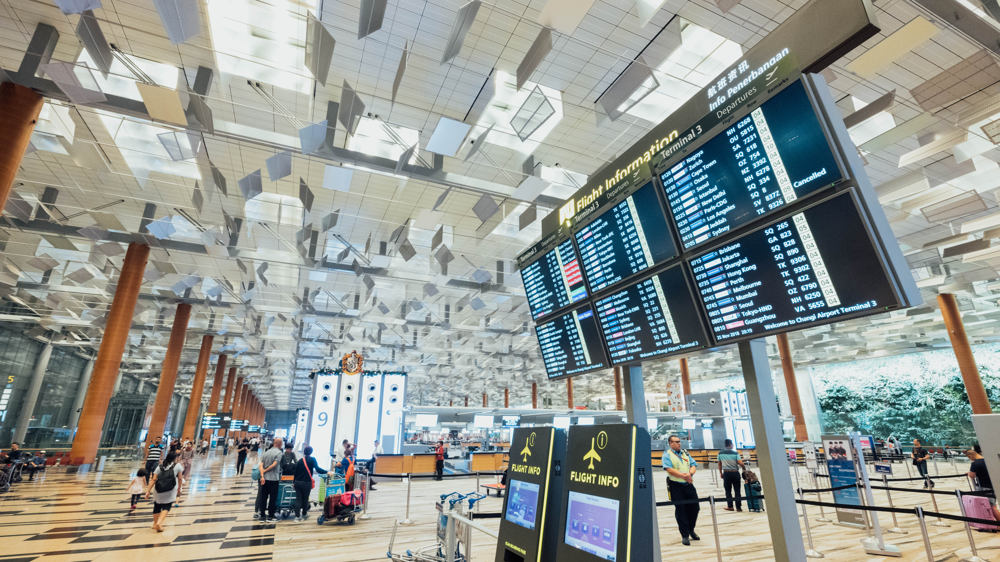

Transfer
Transfer innebär att man tar sig från flygplatsen till det ställe man ska bo på. I mitt fall så landade jag i Girona, som ligger ungefär 1.5h norr om Barcelona. Min transfer var därför från Girona till Barcelona.
Biljetten köper man precis utanför flygplatsen i en liten kiosk. Självklart är detta inte fallet på alla flygplatser, men vid alla flygplatser finns alltid möjligheten att köpa bussanlutning till närmaste ort. Skulle ni flyga direkt till Barcelona kan man eventuellt betala för en taxi, som inte alls kostar mycket jämfört med taxin i Sverige. En biljett tur och retur från Girona till Barcelona kostade 210kr, då hamnade jag i busscentralen i Barcelona, och därifrån tog jag en taxi till lägenheten jag skulle bo i.